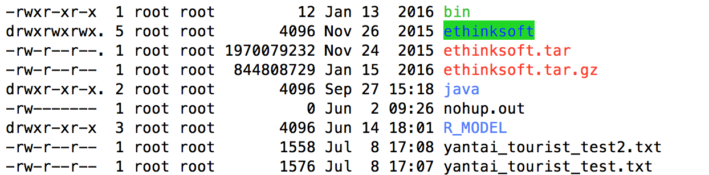
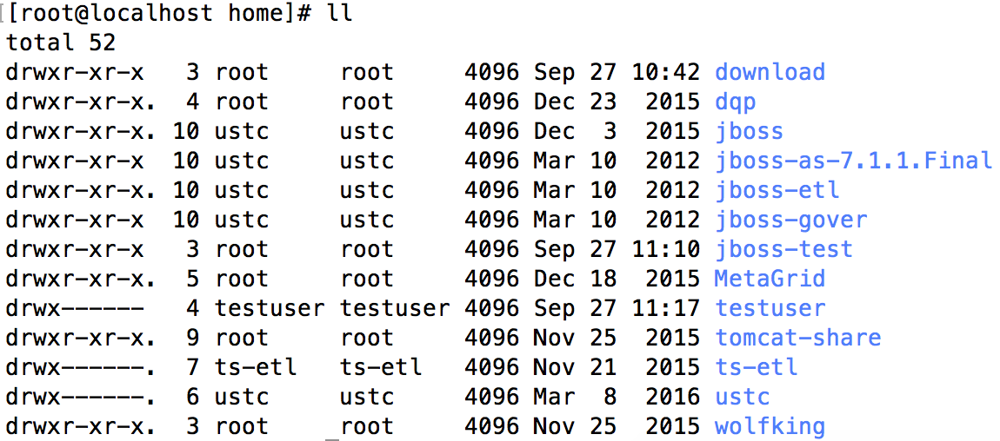
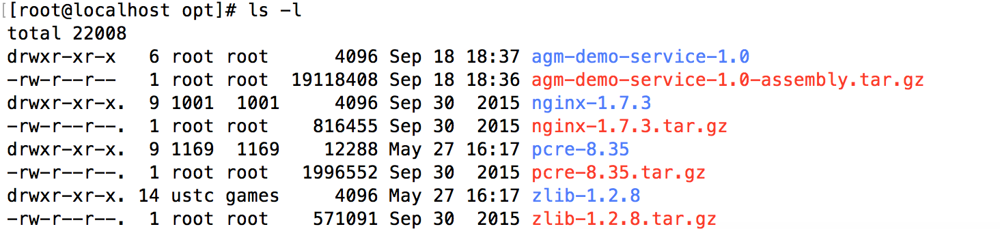
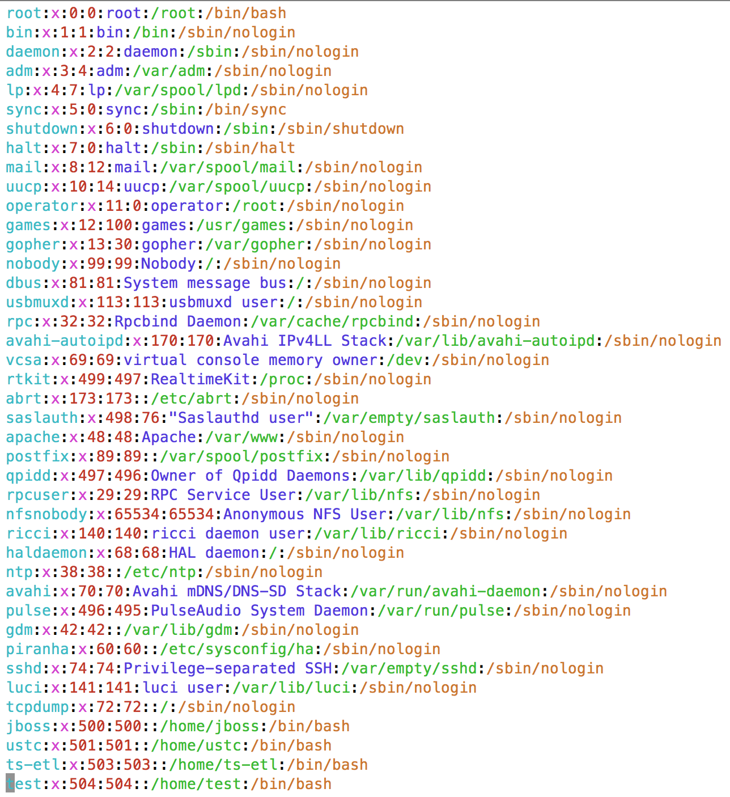

136应用服务器整理规划
随着部门壮大，对部门应用服务器的使用也应该趋于规范化，对其目录的建立和文件的存放需要有明文规定去约束，对于用户和用户组的管理也应该更加清晰明确。
一、首先对136应用服务器的/root、/home和/opt目录进行整理。
1、/root目录
1.1 现状

1.2 整理意见
|
文件（目录）名 |
描述 |
整理意见 |
|
ethinksoft |
象形软件 |
建议备份 |
|
java/ |
测试（ LNTEST.class、LNTEST.java） |
删除 |
|
yantai_tourist_test2.txt |
测试数据 |
删除 |
|
yantai_tourist_test.txt |
测试数据 |
删除 |
|
R_MODEL |
2、/home目录
2.1 现状

2.2 整理意见
|
文件（目录）名 |
描述 |
整理意见 |
|
download |
包括.exe,jar,tar.gz等等 |
目录保留 |
|
dqp |
数据质量模块 |
建议备份 |
|
jboss |
贵阳市数据铁龙项目Demo |
建议备份 |
|
jboss-as-7.1.1.Final |
山东联通综合分析系统测试版本 |
王晓倩使用中 |
|
jboss-etl |
数据整合项目 |
建议备份 |
|
jboss-gover |
贵阳市数据铁龙项目Demo（测试） |
建议备份 |
|
jboss-test |
山东联通综合分析系统测试版本 |
王晓倩使用中 |
|
MetaGrid |
元数据处理 |
建议备份 |
|
tomcat-share |
数据共享 |
建议备份 |
|
ts-etl |
数据整合相关脚本和文件 |
建议备份 |
|
ustc | ||
|
wolfking |
数据共享相关 |
建议备份 |
3、/opt目录
3.1 现状

3.2 处理意见
|
文件名称 |
具体描述 |
处理意见 |
|
Agm-demo-service-1.0 |
数据采集 |
不处理 |
|
Nginx-1.7.3 |
反向代理 |
不处理 |
|
Pcre-8.35 |
不处理 |
|
|
Zlib-1.2.8 |
不处理 |
4、总结
对于用户目录，根据具体的项目名称建立大的目录，再根据用途建立子目录。分门别类，有助于管理员管理服务器。
二、用户的整理和管理
当前的用户列表：

其中jboss是贵阳发改委demo测试用户 ，ts-etl是数据整合测试用户，test 是测试用户。